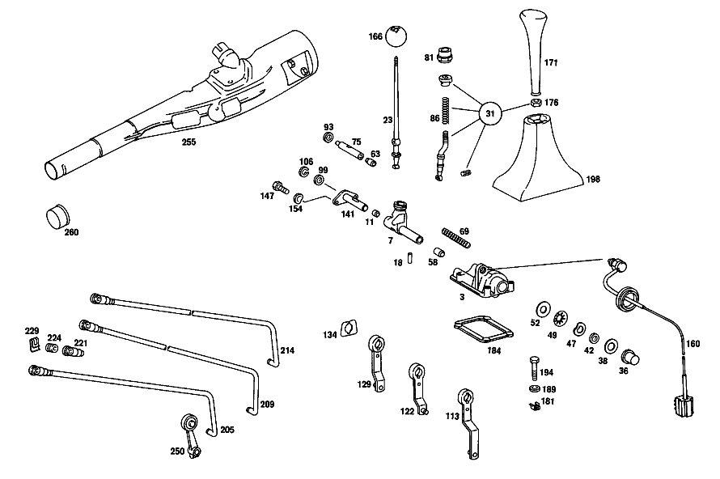

| № | Артикул | Название | Кол. | Примечание | Ограничение |
|---|---|---|---|---|---|
| 3 | A 115 267 36 05 | Опорный кронштейн | 1 | Z 10.834/01, Z 10.834/02, Z 10.834/05 | |
| 7 | A 115 260 72 82 | Тяга переключения передач | 1 | Z 10.834/01, Z 10.834/02, Z 10.834/05 | |
| 11 | A 115 267 11 50 | ВТУЛКА | 1 | Z 10.834/01, Z 10.834/02 [402] БОЛЬШЕ НЕ ПОСТАВЛЯЕТСЯ | |
| 18 | A 115 991 03 01 | Палец | 1 | Z 10.834/01, Z 10.834/02, Z 10.834/05 | |
| 23 | A 115 260 33 39 | РЫЧАГ ПЕРЕКЛЮЧЕНИЯ | 1 | Z 10.834/01, Z 10.834/02 | |
| 31 | A 123 260 11 39 | РЫЧАГ ПЕРЕКЛЮЧЕНИЯ | - | Z 10.834/01, Z 10.834/02, Z 10.834/05 | |
| 31 | A 123 260 22 39 | Рычаг перекл.передач | 1 | ОБЪЁМ ПОСТАВКИ Z 10.834/01, Z 10.834/02, Z 10.834/05 | |
| 36 | A 115 267 07 50 | втулка | 1 | Z 10.834/01, Z 10.834/02, Z 10.834/05 | |
| 38 | A 123 267 02 52 | Диск | 1 | Z 10.834/01, Z 10.834/02, Z 10.834/05 | |
| 42 | A 115 990 26 40 | ШАЙБА | 1 | Z 10.834/01, Z 10.834/02, Z 10.834/05 | |
| 47 | N 900055 018001 | Пружинная шайба | 1 | Z 10.834/01, Z 10.834/02, Z 10.834/05 | |
| 49 | A 123 993 06 26 | Тарельчатая пружина | 2 | Z 10.834/01, Z 10.834/02, Z 10.834/05 | |
| 52 | A 123 267 02 52 | Диск | 1 | Z 10.834/01, Z 10.834/02, Z 10.834/05 | |
| 58 | A 115 267 10 50 | втулка | 1 | Z 10.834/01, Z 10.834/02 | |
| 63 | A 115 267 22 50 | втулка | 1 | Z 10.834/01, Z 10.834/02, Z 10.834/05 | |
| 69 | A 115 993 93 03 | Нажимная пружина | 1 | Z 10.834/01, Z 10.834/02, Z 10.834/05 | |
| 75 | A 115 260 03 76 | Направляющий палец | 1 | Z 10.834/01, Z 10.834/02, Z 10.834/05 | |
| 81 | A 115 267 01 14 | Колпачок | 1 | Z 10.834/01, Z 10.834/02, Z 10.834/05 | |
| 86 | A 115 993 99 02 | Нажимная пружина | 1 | Z 10.834/01, Z 10.834/02, Z 10.834/05 | |
| 93 | A 111 997 12 40 | Уплотнительное кольцо | 1 | Z 10.834/01, Z 10.834/02, Z 10.834/05 | |
| 99 | A 186 990 69 40 | Диск | NB | Z 10.834/01, Z 10.834/02, Z 10.834/05 | |
| 106 | A 186 268 02 73 | предохранитель | 1 | Z 10.834/01, Z 10.834/02, Z 10.834/05 | |
| 113 | A 115 260 41 39 | Рычаг | 1 | ПЕРЕДАЧА ЗАДНЕГО ХОДА Z 10.834/01, Z 10.834/02, Z 10.834/05 | |
| 122 | A 115 260 43 39 | Рычаг | 1 | ПЕРВАЯ И ВТОРАЯ ПЕРЕДАЧА Z 10.834/01, Z 10.834/02, Z 10.834/05 | |
| 129 | A 115 260 42 39 | Рычаг | 1 | ТРЕТЬЯ И ЧЕТВЁРТАЯ ПЕРЕДАЧА Z 10.834/01, Z 10.834/02, Z 10.834/05 | |
| 134 | A 115 267 06 76 | Диск | 1 | Z 10.834/01, Z 10.834/02, Z 10.834/05 | |
| 141 | A 115 260 03 76 | Направляющий палец | 1 | Z 10.834/01, Z 10.834/02, Z 10.834/05 | |
| 147 | N 000933 006130 | Винт | 2 | Z 10.834/01, Z 10.834/02, Z 10.834/05 | |
| 154 | N 000137 006204 | Пружинная шайба | 2 | Z 10.834/01, Z 10.834/02, Z 10.834/05 | |
| 160 | A 000 545 24 06 | Переключатель | 1 | Z 10.834/01, Z 10.834/02, Z 10.834/05 | |
| 166 | A 111 268 09 42 | Кнопка ручки рычага КП | 1 | Z 10.834/01, Z 10.834/02 | |
| 171 | A 115 267 12 10 | РУЧКА | - | Z 10.834/01, Z 10.834/02, Z 10.834/05 | |
| 171 | A 126 267 01 10 | РУЧКА | - | Z 10.834/01, Z 10.834/02, Z 10.834/05 | |
| 171 | A 126 267 04 10 | Ручка рычага перекл.пер. | 1 | Z 10.834/01, Z 10.834/02, Z 10.834/05 | |
| 176 | N 070616 010003 | Гайка | 1 | Z 10.834/01, Z 10.834/02, Z 10.834/05 | |
| 181 | A 000 990 27 91 | ГАЙКОДЕРЖАТЕЛЬ | - | Z 10.834/01, Z 10.834/02, Z 10.834/05 | |
| 181 | A 000 990 22 91 | ГАЙКОДЕРЖАТЕЛЬ | - | Z 10.834/01, Z 10.834/02, Z 10.834/05 | |
| 181 | A 001 990 67 91 | Гайкодержатель | 4 | Z 10.834/01, Z 10.834/02, Z 10.834/05 | |
| 184 | A 115 267 03 80 | Уплотнительная прокладка | 1 | Z 10.834/01, Z 10.834/02, Z 10.834/05 | |
| 189 | N 009021 006205 | Шайба | - | Z 10.834/01, Z 10.834/02, Z 10.834/05 | |
| 189 | N 009021 006208 | Шайба | 4 | 6 MM Z 10.834/01, Z 10.834/02, Z 10.834/05 | |
| 194 | N 000931 006137 | Винт | 3 | Z 10.834/01, Z 10.834/02, Z 10.834/05 | |
| 198 | A 115 267 08 97 | МАНЖЕТА | - | Z 10.834/01, Z 10.834/02, Z 10.834/05 | |
| 198 | A 123 267 00 97 | Манжета | 1 | Z 10.834/01, Z 10.834/02, Z 10.834/05 | |
| 221 | A 115 260 03 53 | - Концевой элемент | 3 | Z 10.834/01, Z 10.834/02, Z 10.834/05 [402] БОЛЬШЕ НЕ ПОСТАВЛЯЕТСЯ | |
| 224 | A 115 992 01 10 | - ВТУЛКА | - | Z 10.834/01, Z 10.834/02, Z 10.834/05 | |
| 224 | A 210 992 00 10 | - втулка | 3 | Z 10.834/01, Z 10.834/02, Z 10.834/05 | |
| 229 | A 000 994 10 60 | ПРЕДОХРАНИТЕЛЬ | - | Z 10.834/01, Z 10.834/02, Z 10.834/05 | |
| 229 | A 000 994 29 60 | предохранитель | 3 | Z 10.834/01, Z 10.834/02, Z 10.834/05 | |
| 250 | A 115 260 75 37 | РЫЧАГ | - | Рулевое управление: Вправо Z 10.834/01, Z 10.834/02, Z 10.834/05 | |
| 250 | A 115 268 25 30 | Рычаг | 1 | ПЕРВАЯ И ВТОРАЯ ПЕРЕДАЧА Рулевое управление: Вправо Z 10.834/01, Z 10.834/02, Z 10.834/05 | |
| 255 | A 115 460 35 16 | Труб. секция рул. колонки | 1 | Рулевое управление: Влево Z 10.834/01, Z 10.834/02, Z 10.834/05 | |
| 260 | A 115 462 03 23 | КРЫШКА | 1 | Z 10.834/01, Z 10.834/02, Z 10.834/05 [402] БОЛЬШЕ НЕ ПОСТАВЛЯЕТСЯ | |
| A 115 267 14 05 | ПОДШИПНИК | - | Z 10.834/01, Z 10.834/02, Z 10.834/05 | ||
| A 115 267 34 05 | ПОДШИПНИК | - | Z 10.834/01, Z 10.834/02, Z 10.834/05 | ||
| A 115 260 45 82 | ТЯГА ПЕРЕКЛЮЧЕНИЯ | - | Z 10.834/01, Z 10.834/02 | ||
| A 115 260 61 82 | ТЯГА ПЕРЕКЛЮЧЕНИЯ | - | Z 10.834/01, Z 10.834/02 | ||
| A 115 260 63 82 | ТЯГА ПЕРЕКЛЮЧЕНИЯ | - | Z 10.834/01, Z 10.834/02 | ||
| A 115 267 04 01 | РЫЧАГ ПЕРЕКЛЮЧЕНИЯ | - | Z 10.834/01, Z 10.834/02 | ||
| A 115 267 06 01 | РЫЧАГ ПЕРЕКЛЮЧЕНИЯ | - | Z 10.834/01, Z 10.834/02 | ||
| A 115 260 04 39 | РЫЧАГ ПЕРЕКЛЮЧЕНИЯ | - | Z 10.834/01, Z 10.834/02 | ||
| A 115 260 09 39 | РЫЧАГ ПЕРЕКЛЮЧЕНИЯ | - | Z 10.834/01, Z 10.834/02 | ||
| A 115 260 16 39 | РЫЧАГ ПЕРЕКЛЮЧЕНИЯ | - | Z 10.834/01, Z 10.834/02 | ||
| A 115 267 07 01 | РЫЧАГ ПЕРЕКЛЮЧЕНИЯ | - | Z 10.834/01, Z 10.834/02 | ||
| A 115 260 05 39 | РЫЧАГ ПЕРЕКЛЮЧЕНИЯ | - | Z 10.834/01, Z 10.834/02 | ||
| A 115 260 08 39 | РЫЧАГ ПЕРЕКЛЮЧЕНИЯ | - | Z 10.834/01, Z 10.834/02 | ||
| A 115 260 15 39 | РЫЧАГ ПЕРЕКЛЮЧЕНИЯ | - | Z 10.834/01, Z 10.834/02 [023] OLD PART NUMBER INAPPLICABLE TO 115.005,017,105,107,108,114,117,119 | ||
| A 115 260 32 39 | РЫЧАГ ПЕРЕКЛЮЧЕНИЯ | - | Z 10.834/01, Z 10.834/02, Z 10.834/05 | ||
| A 123 993 01 26 | ПРУЖИНА ДИСКОВАЯ | - | Z 10.834/01, Z 10.834/02, Z 10.834/05 | ||
| A 115 990 25 40 | ШАЙБА | - | Z 10.834/01, Z 10.834/02, Z 10.834/05 | ||
| A 182 993 08 01 | пружина | 1 | Z 10.834/01, Z 10.834/02 | ||
| A 115 268 04 39 | НАПРАВЛЯЮЩ. ЦАПФА | 1 | Z 10.834/01, Z 10.834/02, Z 10.834/05 [415] ПРИМЕЧ. ПО ЗАМЕНЕ ПРИМЕНИМО ТОЛЬКО ДЛЯ СТОЯЩИХ РЯДОМ ПОЗИЦИЙ | ||
| A 115 268 02 57 | ПРОБКА | - | Z 10.834/01, Z 10.834/02, Z 10.834/05 | ||
| A 115 260 83 37 | РЫЧАГ | - | Z 10.834/01, Z 10.834/02 [023] OLD PART NUMBER INAPPLICABLE TO 115.005,017,105,107,108,114,117,119 | ||
| A 115 260 95 37 | РЫЧАГ | - | Z 10.834/01, Z 10.834/02 [023] OLD PART NUMBER INAPPLICABLE TO 115.005,017,105,107,108,114,117,119 | ||
| A 115 260 19 39 | РЫЧАГ ПЕРЕКЛЮЧЕНИЯ | - | Z 10.834/01, Z 10.834/02, Z 10.834/05 | ||
| A 115 260 38 39 | РЫЧАГ ПЕРЕКЛЮЧЕНИЯ | - | Z 10.834/01, Z 10.834/02, Z 10.834/05 | ||
| A 115 260 84 37 | РЫЧАГ | - | Z 10.834/01, Z 10.834/02 [023] OLD PART NUMBER INAPPLICABLE TO 115.005,017,105,107,108,114,117,119 | ||
| A 115 260 96 37 | РЫЧАГ | - | Z 10.834/01, Z 10.834/02 [023] OLD PART NUMBER INAPPLICABLE TO 115.005,017,105,107,108,114,117,119 | ||
| A 115 260 17 39 | РЫЧАГ ПЕРЕКЛЮЧЕНИЯ | - | Z 10.834/01, Z 10.834/02, Z 10.834/05 | ||
| A 115 260 36 39 | РЫЧАГ ПЕРЕКЛЮЧЕНИЯ | - | Z 10.834/01, Z 10.834/02, Z 10.834/05 | ||
| A 115 260 85 37 | РЫЧАГ | - | Z 10.834/01, Z 10.834/02 [023] OLD PART NUMBER INAPPLICABLE TO 115.005,017,105,107,108,114,117,119 | ||
| A 115 260 97 37 | РЫЧАГ | - | Z 10.834/01, Z 10.834/02 [023] OLD PART NUMBER INAPPLICABLE TO 115.005,017,105,107,108,114,117,119 | ||
| A 115 260 18 39 | РЫЧАГ ПЕРЕКЛЮЧЕНИЯ | - | Z 10.834/01, Z 10.834/02, Z 10.834/05 | ||
| A 115 260 37 39 | РЫЧАГ ПЕРЕКЛЮЧЕНИЯ | - | Z 10.834/01, Z 10.834/02, Z 10.834/05 | ||
| A 115 267 02 76 | ШАЙБА | - | Z 10.834/01, Z 10.834/02 | ||
| A 115 267 08 05 | ПОДШИПНИК | - | Z 10.834/01, Z 10.834/02, Z 10.834/05 | ||
| A 111 268 02 42 | КНОПКА | - | Z 10.834/01, Z 10.834/02 | ||
| A 115 260 00 40 | РУЧКА | - | Z 10.834/01, Z 10.834/02 | ||
| N 000931 006114 | Винт | - | Z 10.834/01, Z 10.834/02, Z 10.834/05 | ||
| N 304017 006012 | Винт с 6-гранной головкой | 1 | M6X30\-8.8 Z 10.834/01, Z 10.834/02, Z 10.834/05 | ||
| A 115 267 01 97 | Манжета | 1 | Z 10.834/01, Z 10.834/02 | ||
| A 115 267 04 97 | МАНЖЕТА | - | Z 10.834/01, Z 10.834/02, Z 10.834/05 | ||
| A 115 260 15 33 | Тяга переключения передач | 1 | Z 10.834/02 | ||
| A 115 260 16 33 | Тяга переключения передач | 1 | Z 10.834/02 | ||
| A 115 260 17 33 | Тяга переключения передач | 1 | Z 10.834/02 | ||
| N 900055 010002 | Пружинная шайба | - | Z 10.834/01, Z 10.834/02 | ||
| N 000137 010205 | Пружинная шайба | 3 | Z 10.834/01, Z 10.834/02 | ||
| A 115 460 36 16 | ТРУБЧАТ. СЕКЦИЯ РУЛ. КОЛ. | 1 | Рулевое управление: Вправо Z 10.834/01, Z 10.834/02, Z 10.834/05 [402] БОЛЬШЕ НЕ ПОСТАВЛЯЕТСЯ |
Позиций: 99 · подписано на схемах: 53 · колесо — плавный зум в курсор, перетаскивание — пан, двойной клик — зум, клик по артикулу — скопировать.